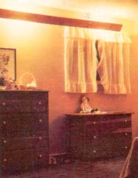
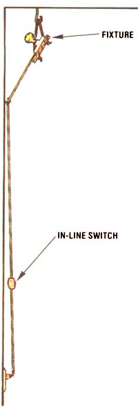
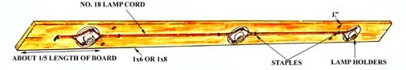
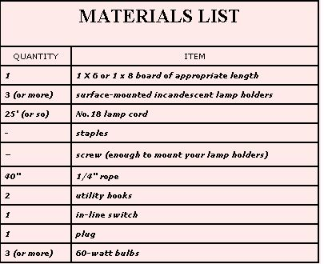

In less than an hour's time, and with an investment of only $5.00 or so, you can enjoy . . .
"Bounced" light, because it produces less glare and softer shadows than does direct lighting, can be both attractive and restful. And you may be surprised to know that an indirect lighting setup can be built to suit any room. Better still, you don't need advanced carpentry skills, a fat wallet, or endless hours of free time to do the job. In fact, my entire house is now illuminated with homemade units like the one shown in the accompanying photo ... and each of the fixtures required less than five of my dollars, and no more than an hour of my time!
Furthermore, even though my lights are rather rustic in appearance (in keeping with the rest of my home's decor), there's no reason why yours can't be as decorative as your talent and budget allow. You could, for instance, substitute a sanded and painted (or stained) board for my rough-sawed plank, a decorator chain for the knotted rope I used, and attractive plant hooks for the simple utility hangers that support my fixtures.
Begin the project by cutting a 1 X 6 (or 1 X 8) board of your choice to a little less than the length of the wall you plan to illuminate. Then install a series of surface-mounted lamp holders (they're available - in plastic or ceramic, and with exposed terminals for easy wiring - for less than a dollar a piece at many hardware stores) along the back of the plank, at approximately 3-foot intervals.
Now, simply run your No. 18 lamp cord from socket to socket, as shown in the drawing (you will, of course, have to bare the wire where it attaches to the terminals) and secure it with staples.
Once you've hooked up the last of your series of lamp holders, leave about 12 feet of wire (you'll later want to check the distance to the nearest outlet) ... attach a plug to the end of the cord ... and then install an in-line switch at a convenient height.
With the basic assembly completed (already!), you can rig up a support system. My knotted-rope arrangement required that I drill the two pairs of holes indicated in the drawing, spacing them about one-fifth of the board's length from each of its ends. (If you decide to develop an alternative method, keep in mind that the plank should hang about 6 inches down from the ceiling, and the same distance out from the wall.)
Then I knotted one end of each of two 20" sections of 1/4" rope, threaded the lengths through the pairs of holes in the board (with the knots on the visible side), and tied off the working ends, as shown in the photo. Be warned ... you may have to retie the loops a couple of times before the plank hangs level. However, once the hooks are fastened to the ceiling (I secured mine to plastic toggle bolts) and the fixture is suspended to your satisfaction, the lamp will be ready to plug in.
You really ought to give this simple project a try. After all, the investment is well within reason ... and I'm convinced that you'll find the soft illumination really enjoyable, whether you're thumbing through yet another seed catalog or reading the latest issue of MOTHER.
|
 |
 |
 |
|
 |
|
|